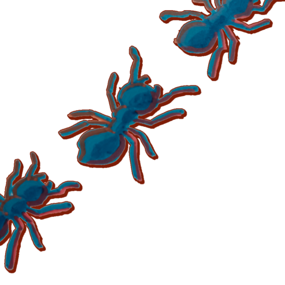
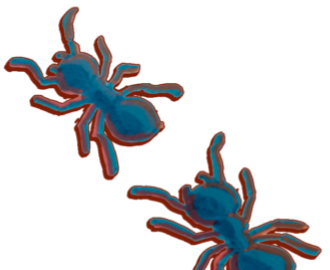
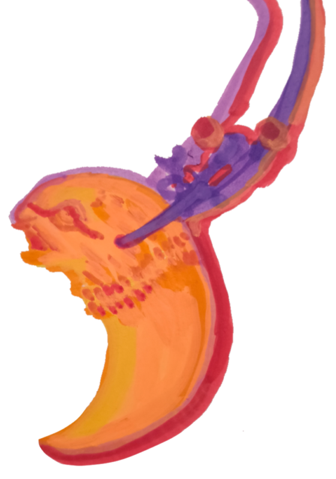
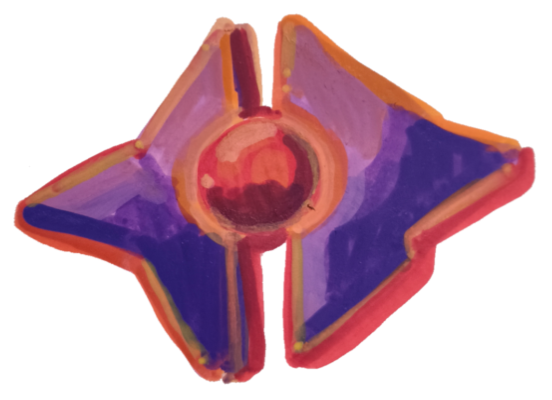
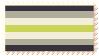
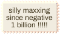
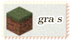
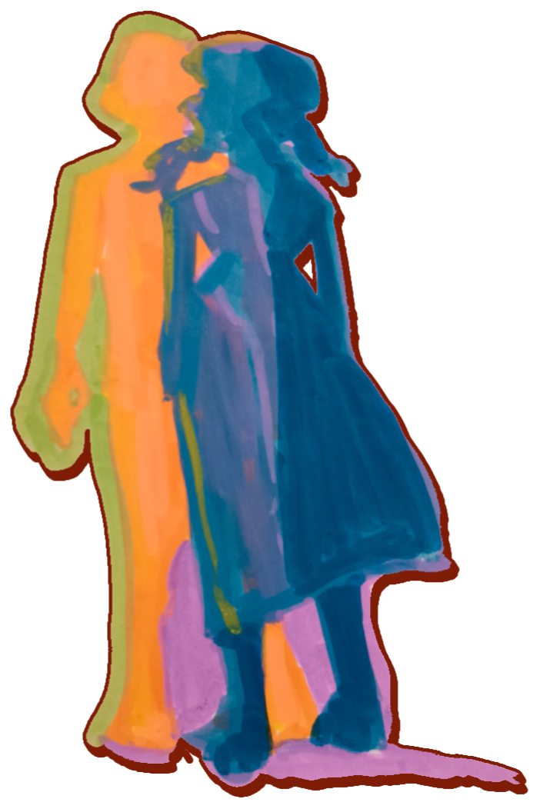
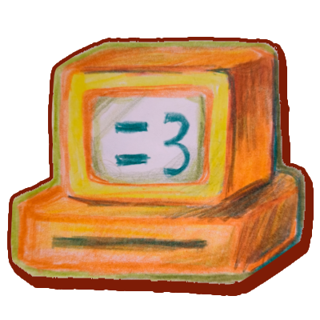

To Be or Not To Be
I understood the ferocity of being. That's what I said, when she first met me. You wouldn't have believed it. Back then, I was a cloud of unwarranted gloom. All edge, no substance. Like all teenagers, I was just looking for another thing to convince myself my nihilistic world views were profound and truthful. She told me, then, that I understood nothing. That one day, I would understand just how much I had only heard from echoes. How much was just shadows on the cave walls.
The real world, she said, was beautiful.
The gore of existing inside flesh, and the arrogance of those who could ignore it. I understood the ferocity of being. I understood the beauty of ferocity. I understood you—prisoner unwilling to be freed. We were both building cages around ourselves. Partly to keep the things outside away, mostly to keep ourselves from the things outside. Unreachable, both ways. She never understood that.
The real world, she said, was beautiful.
I wondered, one day, what the real world meant to her. Was it the soft breeze in the air, as summer turned to rain—as scalding heat was dulled by the mute grey skies I called my home? Or was it more like the pool that last time we were all together, cold waters bleeding into clothes not made for swimming, when you told us this was what you were born to do. You floated face-up in silence, half the time. I watched you as she danced light-footed atop the waves.
The real world, you said, was hard to understand.
I tore myself apart in the attempt to understand. I don't think I ever completely realized how much damage you could do to yourself inside your own mind. I dreamed of blood pooling into the soles of my shoes and endless ants walking endless circles around me. I saw her, sometimes, maybe a lot of the time. She always told me to give up—but I found myself unwilling to let any of myself go. I reached blindly into my torso and tried to rip out the things I thought were hurting me. But I missed, always, and the ants just crawled over the mess I made as if it wasn't there. I was too big for them to care about. They were too small for me to kill in a way that mattered.
The real world, I said, was ant-infested.
She laughed, and you did too.
You always traveled alone, claiming to be something of a wanderer. We both knew you were just trying to keep one foot in the door. I never trusted you. But I felt you fall into me, the same way she did, the same way they all do. I felt you try to claw your way out, try to scream and fight and wander off as they all do. She grabbed your legs, dug her nails into your calves. You looked down, into her empty eyes, into the depths I built from mud and sand. You let go.
The real world, she thought, was within us.
She made a home out of that dark cave. We faced the wall, she faced the exit. Yet, she stayed. She told us about colors, about flowers, about beauty and about living. We couldn't believe her, for all we knew was to exist. You liked to watch the shadows. I liked the shadows. She liked the cave. She told us how beautiful it would be. Freedom. You listened silently. I didn't ask what she thought freedom was. I didn't ask why she stayed inside a cage she owned the key to.
The real world existed. Somewhere.
She wore the same smile that she did back when we all took walks around the desert suburbs to point out cacti in our neighbors' lawns. She asked me if our childhood was worth something to me. You were the one that responded, yes, for both of us. But she never said anything back. I remembered we weren't in the desert anymore. It felt just as hot. I wasn't used to rain.
You told me you thought I was happier than you. Than both of you. I didn't know what you meant. I only felt ants crawling on my ribs—my own hands grabbing bone and pulling. You said you wanted to leave. I agreed with you. You said I didn't understand you. I didn't.
She didn't chase you when you left. Or maybe she was the reason you left. I saw you leave, but I didn't feel it. In my head, you were still trying to escape me. I wasn't sure how far removed the visions in my head were from the real world. Wasn't the real world beautiful? I questioned it often, but I always landed on the same answer. The sound of her voice, the look on your face. Of course the real world was beautiful; but I didn't know what to do with beauty besides deface it.
I love hideous things. You did too. I think. Most of the time I feel like I am sitting alone in this cave, watching shadows I can't make sense of. She was still there with me, facing the exit, but saying nothing. I think she felt that she had said all she could. But I imagined her voice in my head, telling me I would be happy—seriously—if I just stood up and started walking. But I liked the shadows. She liked the cave. You already stopped watching, even though I could feel the ache in your heart in mine.
I wondered why she didn't leave. I wondered why she let you go.
The real world, she said, was beautiful. But I was a paintbrush packed with black ink, she said, that didn't know when to stop making shadows darker. She told me I was the cave, and I was the prisoner, and I was the shadows, and I was her, and I was you, and I was the real world, and I was beautiful. But I didn't know when to stop making shadows darker. But I only heard echoes. But I only saw you, face up in the pool in silence, and her, smiling beneath the desert heat. I didn't see you, letting go of that ledge because you knew you couldn't win against me. I didn't see her empty eyes as she fell with you. I didn't see my own blood pooling into the stone below me.
She held a rock in her hand.
The real world, she said, was so, so beautiful.
And I was the real world, and I was the beauty, and you were the rock, and I was you, and she was my blood and flesh and bone, and I was her, and I was the caves, and I was the shadows, and I was the Prisoner, and I was the echoes, and I was the ants, and I was being. Being. Being.


Welcome! Ayze here :3
I'm a 21 y/o writer, programmer, and artist majoring in video game development :) This site was made as a multi-media passion project that combined all my favorite ways of experiencing media on the web.
I'm a big fan of interactivity and the concept of telling a story through interactive media like games and websites. I wanted this website to be both a place I can express myself and a "world" of its own. Thanks for taking a look around!
This page is gonna be 99% in paragraph form because if there's anything I like to do it's use more words than necessary.
Things I enjoy :D
- Writing for sure. I've been a writer since I was a kid, mostly original fiction but a couple fanfics and nonfiction essays here and there. I don't typically post my work anywhere but there are a lot of fun little writing bits and pieces in this website and... There's also my old ass quotev I guess, though I haven't updated that since before college.
- I also started art when I was younger just to give my OCs faces and designs. I mostly do digital art but I also have some skill in traditional art mediums. My favorites are acrylic markers (which is what most of the art on this page are made with!) and acrylic paint. I've also dabbled in watercolor and of course your classic colored pencils (technnically I have spent longer using these two but for some reason I am worse at them). As long as it doesn't involve line art I'm happy. I post art on my tumblr(s):
- I have a toxic love-hate relationship with programming wherein we take turns hurting each other. I can obviously do a lil HTML/CSS/Javascript silliness, but I'm most familiar with C#, C++, C, and Python. It's most fun when it's suffering.
- I also really love cloud watching and I have a huge collection of cloud pictures. I also happen to have yet another tumblr for this.
- Other hobbies: reading, playing video games, book binding, making websites apparently, researching mystic practices, collecting necklaces, etc.
Even moooore abt me >:)
I'm aromantic and aegosexual, and also agender but I prefer using the more accessible terms "aroace" and "non-binary" in real life :P I'm also full Filipino! I grew up in the US so my first language is (rather unfortunately) English, though. I'm still learning Tagalog and trying to put it into practice despite living in the Philippines for so long already...
Below are a couple stamps I made for myself. One of the main goals of this site was to make everything, including all the art and stuff, myself. For the main site that will remain largely true, but at least for "meta" pages like this I want to include stamps and blinkies and whatnot from others. There's so many cool ones out there and it would be a shame not to use them.





I first learned HTML/CSS way back when I was like 11 or something. My dad was always trying to get me into programming so I was always bouncing between making lil websites and learning Python on W3Schools and CodeAcademy (lol). But in terms of making games, I used to be really obsessed with making CYOA games on MS PowerPoint. That was one of the biggest inspirations for the design of the main site.
Another reason this site is the way it is: I'm a big fan of media that tries to break the bounds of its medium—or rather takes as much advantage of it as possible. Things like games messing with your files, books that print text in crazy formations, and of course, websites that want you to look into their code. There's something I really enjoy about fiction that reminds you its fiction while trying desperately to escape the realm of fiction.
On that note, the "traveller" character that hops through the code of the site is not meant to be me, per se. They're their own thing. "THING", YOU SAY.
Games :)
Regular Game Rotation
Genshin Impact
I started playing Genshin the day it was released. I didn't really count on it getting as huge as it has. The game has and probably always will have a special place in my heart. I love the lore, I love the combat, I love the exploration. The style of the game is also one of the reasons I've enjoyed it for so long, the cel-shading and choice of colors are right up my alley and has just been getting better and better with every patch. I have a lot of favorite characters, but La Signora (#bringherback #delusionalsinceinazuma) and Zhongli are probably my top 2.
I Love Hue Too
Free casual mobile puzzle games that are really good and still on the app store are few and far between these days. Among them, I Love Hue Too is my absolute favorite. I have hours and hours in this game—and I literally only play it when I don't have wifi or am waiting for the elevator. Top tier game. I love colors.
Fire Emblem: Heroes
I don't actually have anything good to say about this game but it needs to be here because I haven't stopped playing it since I was like 13 or something. I like making the heroes fight against each other in "tournaments" in Arena test battles. I spend hours setting up and recording these fake tournaments that I only show myself. That honestly sums up my entire personality. Also no I haven't played any other Fire Emblem games but I've absorbed FE3H discourse knowledge and am planning to play some of the older ones at some point.
It gets extra points because I plan to create a game that is basically a rip off of this but without all the horrible parts. Which ironically will make it completely unique and irreconcilable with its inspiration.
Cult of the Lamb
I adore Cult of the Lamb so much. I'm not a big real time combat person (perhaps the only time I've been decent at it is in Genshin and that's only because I've been playing for six years) but on easy mode it's fun and engaging enough for me. The cult management is obviously what I enjoy the most, and the cannibalism is a big plus. I love when you can cannibalize things in games.
The Sims 4
I would rather not discuss this. I have almost 2000 hours in it.
Minecraft
Ok, but who doesn't like Minecraft? Fun fact, it's the first video game I ever bought. I got the Bedrock version on mobile in my first year of college. Very soon after, the price got cut down to 50 fucking pesos—can you believe that? But whatever. Who doesn't like Minecraft? I've been sitting on buying Java ever since.
The Battle of Polytopia
I can't talk about games I like without talking about my OG. I assume that this is the game I've been playing the longest ever in my life. It was the reason I got into FEH, and I still hop on and play a random 3 hour run when I'm bored. Now, Polytopia players reading this might be thinking to themselves: "What the hell do they mean '3 hour run'?". Well I like playing on the massive map size with at least 4 other opponents (or 6–8 if I'm on PC. I only have one paid tribe on mobile) on Dominion mode and it does, in fact, take me hours.
Another fun way to play: the same as above, but I play as all tribes with as much dedication to winning for each tribe. This one can take days to finish a game.
Kingdoms and Castles
I can't wait to get Nova Roma. Kingdoms and Castles hit just the right kind of resource management and city building for me. It's the kind of game I can play for 9 hours a day, but there's not actually much I can say about it. I still haven't won any war in this game—I genuinely think it's made to make you realize the sacrifices of war or something. Very different from how I play Polytopia even though the two are kind of "related" in my head.
Other Games I Enjoy/ed and Recommend
Chants of Sennaar
By far one of my favorite puzzle games. The ending was a bit weak in my opinion, but the gameplay itself is phenomenal, not to mention the gorgeous art style.
Disco Elysium
I simply do not have time to play this game, but I adore the little I've played of it. So much soul in the writing and the whole vibe is just so easy to like. Excellent art, too.
Thronefall
A tower-defense game with a very pretty minimalist art style. I only got it for myself for my birthday and I don't regret it at all. Extremely fun.
Dice a Million
I still haven't won a run and I know it's a skill issue. Still, very fun gambling "roguelite".
Roadwarden
A text adventure RPG with really pretty minimalist pixel graphics. I highly recommend this one if you're into text adventures in general!
Age of Empires II
Ok maybe I don't necessarily recommend this, but it's quite nostalgic to me. It might have been the first "proper" PC game I ever played. My dad had it on his computer and let me play it as a kid. It was probably the beginning of my city building and 4x enjoyment. I tried it again recently and I still really liked it. The tutorial was perhaps the worst thing I ever slogged through, though, but that's just a personal opinion.